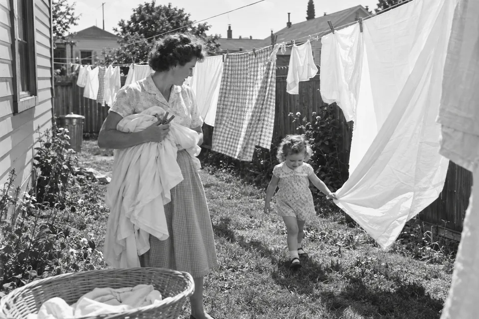
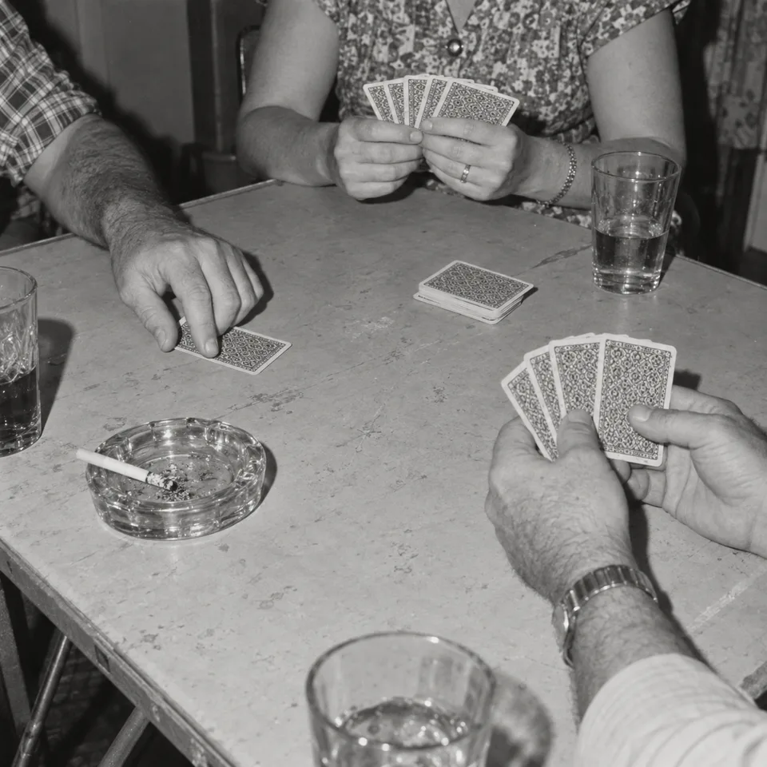
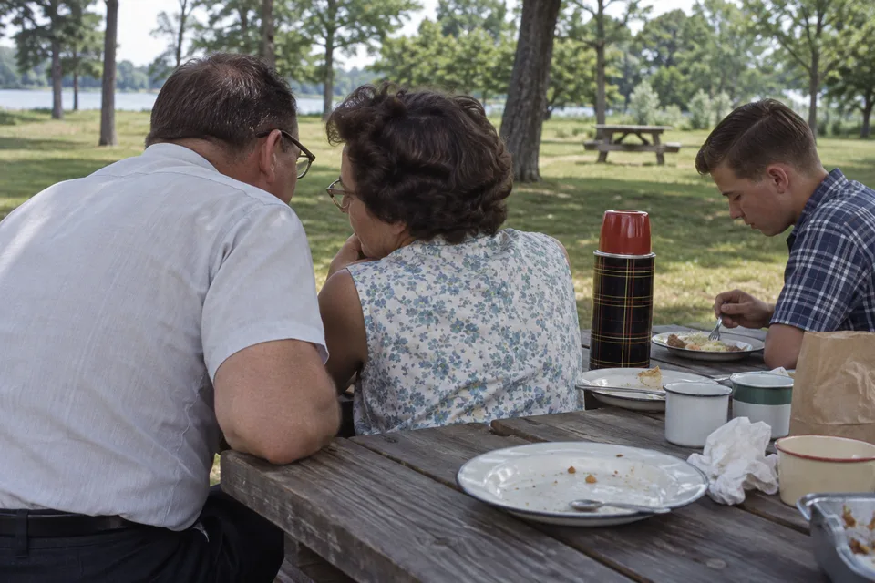
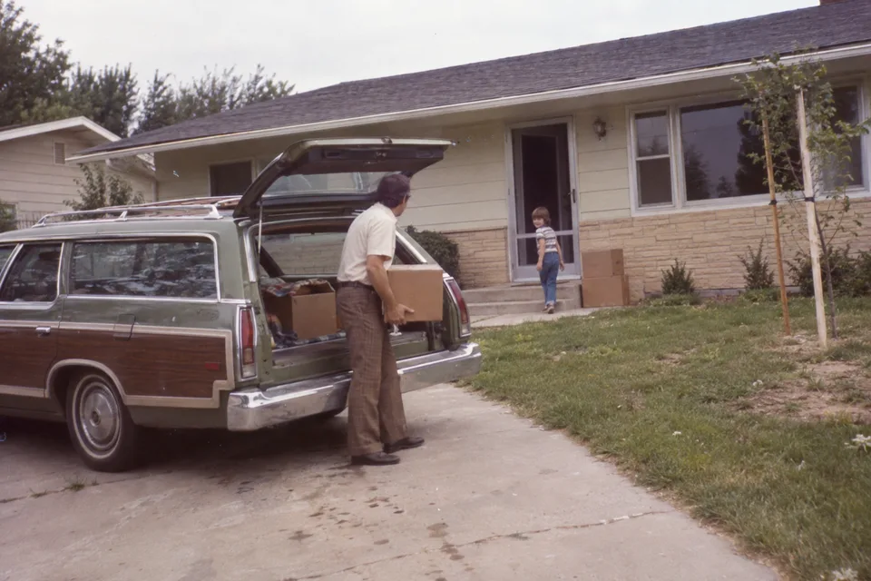
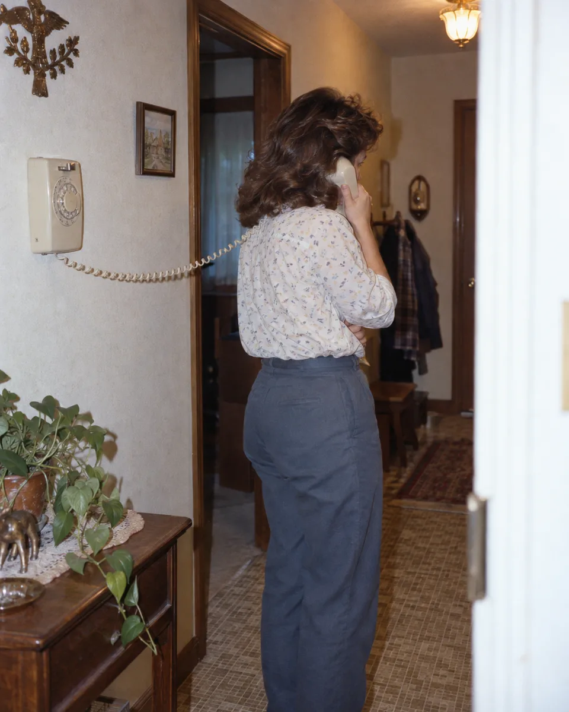
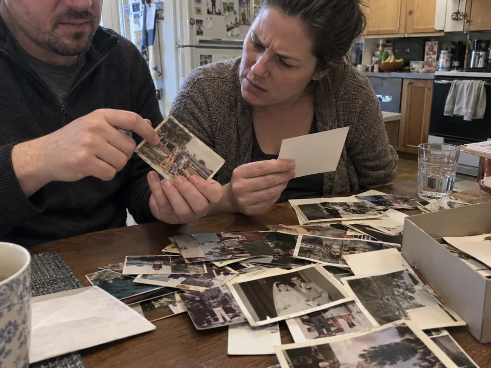
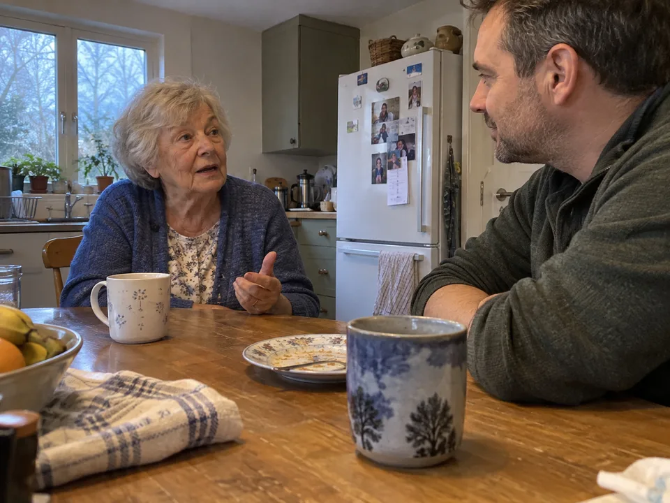

“We had the cake on a card table because the proper one wouldn't fit through the door. Nobody minded. Frank's mother cried through the whole first dance.” Rose, on the phone, 12 October 2026 · from “The day you were married”
Rose's living timeline
What she has told us so far, in the order it happened. Tap a card to read it.

The porch on Elm Street
1952 · Childhood · the house with the screen door
“Dad would stand in the doorway like he was deciding whether to come out at all.”



Washing day
1956 · Childhood · the garden
“Mother hung the sheets so the neighbours could see how white they were.”

The day you were married
1961 · Love · the church hall
“We had the cake on a card table because the proper one wouldn't fit through the door.”



Card nights
1962 · Home · Thursday evenings
“Frank cheated and everyone knew and nobody said.”


After the picnic
1964 · Family · the lake
“That was the summer Daniel was on the way and I couldn't sit on the grass.”
T
The first house
1973 · Home · Marlow Road
“We moved in with a station wagon and three trips. Anne slept in a drawer the first night.”


Sunday dinner, the long version
1980 · Family · Dad telling it again
“He told the one about the goat every single Sunday and it got longer every time.”


The phone in the hall
1981 · Home · the cord that reached the stairs
“Anne could talk for an hour standing on one leg.”

The box from the attic
2022 · Family · Daniel and Anne
“They found the wedding ones and rang me to ask who everybody was.”

Today
2026 · Daniel's kitchen · the question for tomorrow is waiting
“I'll tell you about the goat if you've got all afternoon.”
Something missing? Ask Rose about it — it becomes one of tomorrow's questions, with your name on it.
 Maya
Maya Sam
Sam